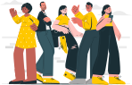
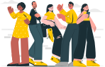

TÓPICO 1
EDUCAÇÃO PERMANENTE EM SAÚDE E SEUS SIGNIFICADOS
TÓPICO 1
EDUCAÇÃO PERMANENTE EM SAÚDE E SEUS SIGNIFICADOS
Clique nos itens e conheça os principais conceitos utilizados nesse campo, segundo o Glossário Temático do Ministério da Saúde (BRASIL, 2013, p. 19-20).

 

Educação na saúde
Educação permanente em saúde
Educação em saúde
Educação popular em saúde
Produção e sistematização de conhecimentos relativos à formação e ao desenvolvimento para a atuação em saúde, envolvendo práticas de ensino, diretrizes didáticas e orientação curricular.
x
Ações educativas embasadas na problematização do processo de trabalho em saúde e que tenham como objetivo a transformação das práticas profissionais e da própria organização do trabalho, tomando como referência as necessidades de saúde das pessoas e das populações, a reorganização da gestão setorial e a ampliação dos laços da formação com o exercício do controle social em saúde.
x
1 - Processo educativo de construção de conhecimentos em saúde que visa à apropriação temática pela população e não à profissionalização ou à carreira na saúde.
2 - Conjunto de práticas do setor que contribui para aumentar a autonomia das pessoas no seu cuidado e no debate com os profissionais e os gestores, a fim de alcançar uma atenção à saúde de acordo com suas necessidades.
x
Ações educativas que têm como objetivo promover, na sociedade civil, a educação em saúde, mediante inclusão social e promoção da autonomia das populações na participação em saúde.
x